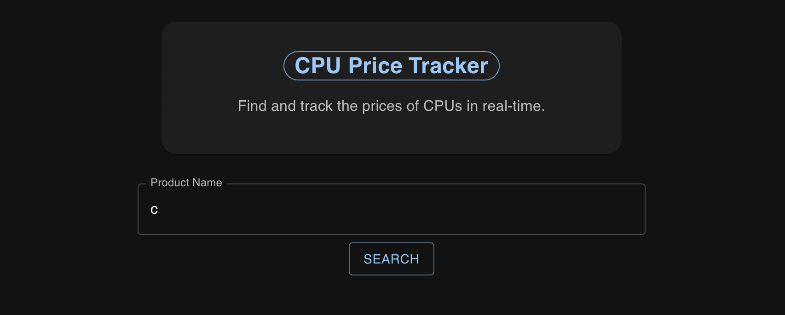

Listed down below are some of the projects I have worked on over the past few years. They differ on the languages used to build them along with their general purpose. More information and the repositories for these projects can be found in my GitHub https://github.com/harrison-zhu.
Provides the clean_vector and clean_dataframe functions which are used to help clean up messy data in vectors and data frames using the stringdist and snakecase libraries. More specifically, the functions help to check classes, encodings, and formatting while ensuring that uniformity is maintained when it comes to the data itself. Additionally, they parse the data for duplicates, NA or null values, and empty values. For cleaning vectors, there are specific functions included that can help check and alter classes, encodings, formatting, and typos with much more specificity than the more generic clean_vector and clean_dataframe functions. The clean_dataframe function also comes with the ability to check not just based on individual data values, but also entire records (rows) and columns, with the ability to remove or replace them based on being exact duplicates, completely empty, or missing names. Overall, the package helps expedite the process of cleaning up messy data, such as in the medical field where there is no standardized abbreviation for many diseases and symptoms.
Periodically collects data on the prices of different CPUs through web scraping, tracking and plotting the price of the CPUs over time. Using the plot, users can determine whether the current prices that are almost always marked with deals are truly cheaper than before or not. Additionally, users can compare prices between CPUs from the same company, or those of the same specs. The script is run daily using Google Firebase, while information is tracked on a json file before updating the interface created using React. Price Tracker
Currently a work in progress, this is a future website for a small baking business, selling mostly cakes and cookies, along with other sweets like egg tarts, with a focus on incorporating Asian flavors like sesame, pandan, or matcha. The frontend is being built using React while the backend is being developed using Node.js currently. The goal and mission of the small business is to raise money to give back and help the Bryan-College Station community with a focus on underprivileged groups. Though the business has not yet started, our first goal is to help struggling household through the Family Promise non-profit. Donations can be made at https://www.familypromisebcs.org/help/donate-money/.